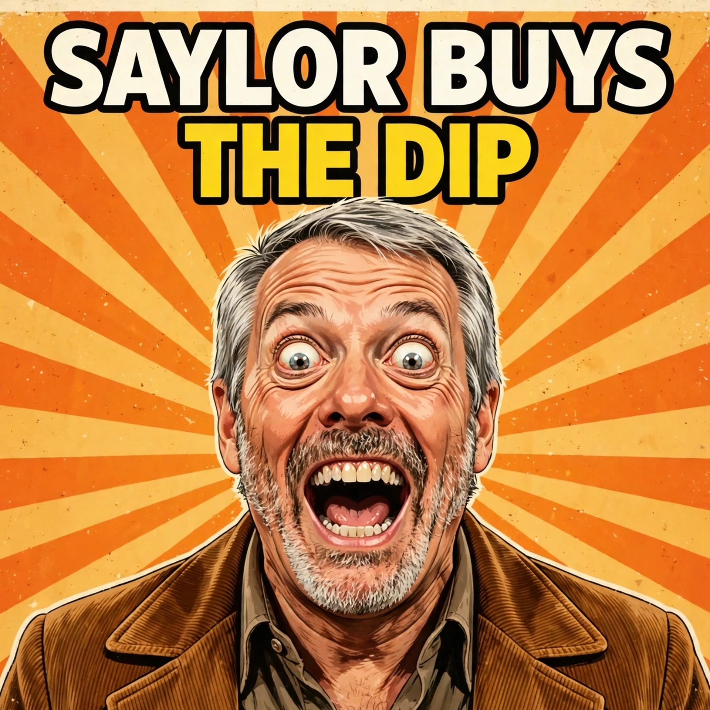
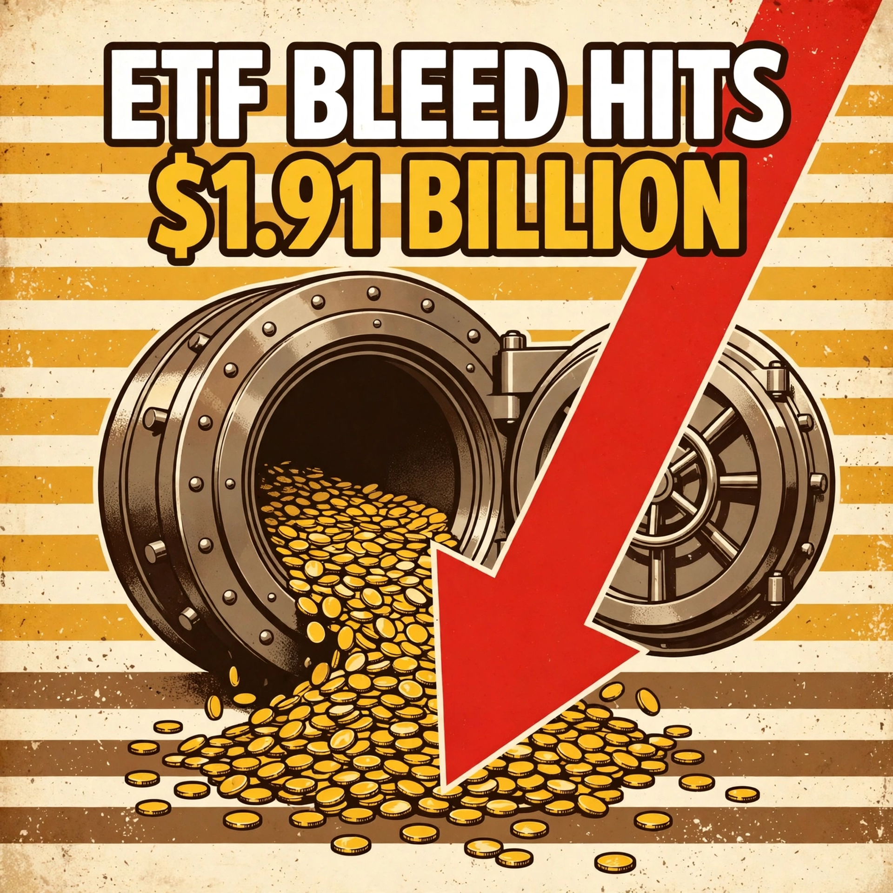
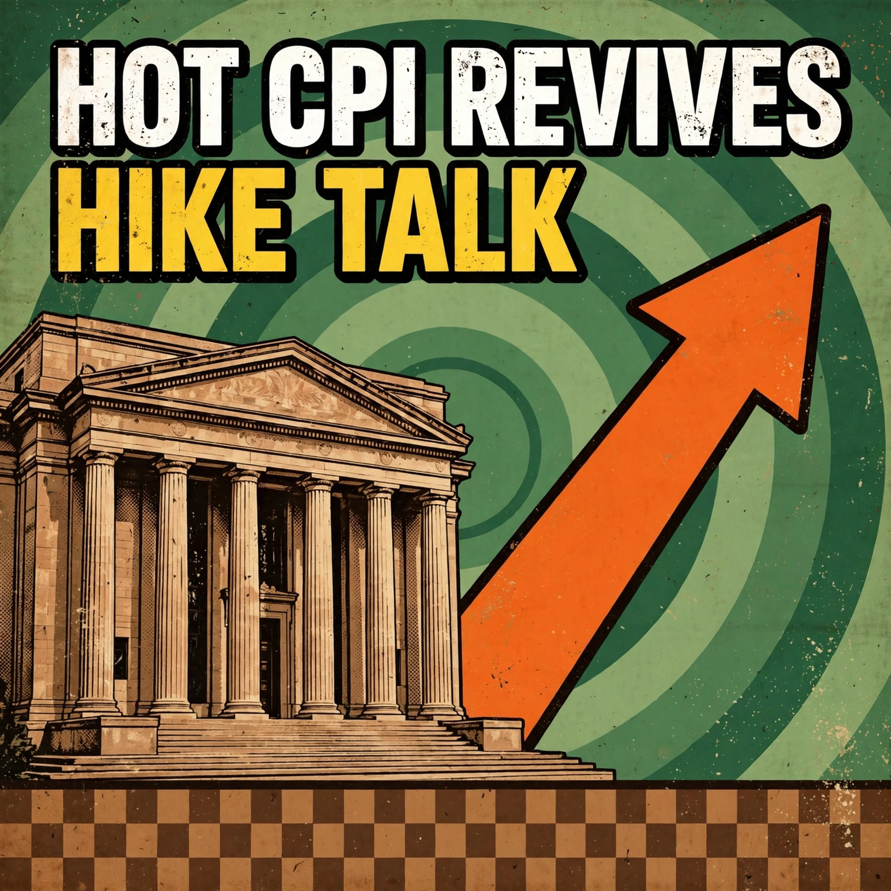

Bitcoin Stories — Monday, Nov 16, 2026

Bitcoin recovered to about $64,800 Sunday after falling to roughly $62,100, its lowest in months. Strategy's Michael Saylor posted 'This dip could use a little orange' while Strive's Matt Cole wrote 'Bitcoin's cheap, we want more.'
Read the full story →Asian shares fell Monday after a whiplash week capped by Nvidia CEO Jensen Huang's resignation. Nvidia's market value has tumbled from about $5.8T in early October to $3.9T, and Tuesday's earnings — expected revenue of $109B, up 90% — plus Anthropic's IPO will test whether the AI bull market still has further to run.
Read the full story →
US spot Bitcoin ETFs recorded $1.07B in net outflows in the week ending November 13, their second consecutive week above $1B, bringing the two-week total to $2.35B. Friday marked the seventh straight trading session of redemptions.
Read the full story →
US consumer prices rose 0.4% in October, above the 0.3% forecast, with core CPI up 0.3% for a third straight month. Traders fully priced a quarter-point December hike, and odds of a half-point move jumped to about 13.6% after Fed Governor Waller said a 50bp hike should be considered.
Read the full story →
Annual interest payments on US public debt hit a record $1.33T and will soon pass Social Security as the largest line item in the federal budget. Over the last 10 years, US tax revenue rose 64% to $5.4T while government spending rose 98% to $7.5T, more than doubling the national debt to $40.5T.
Read the full story →